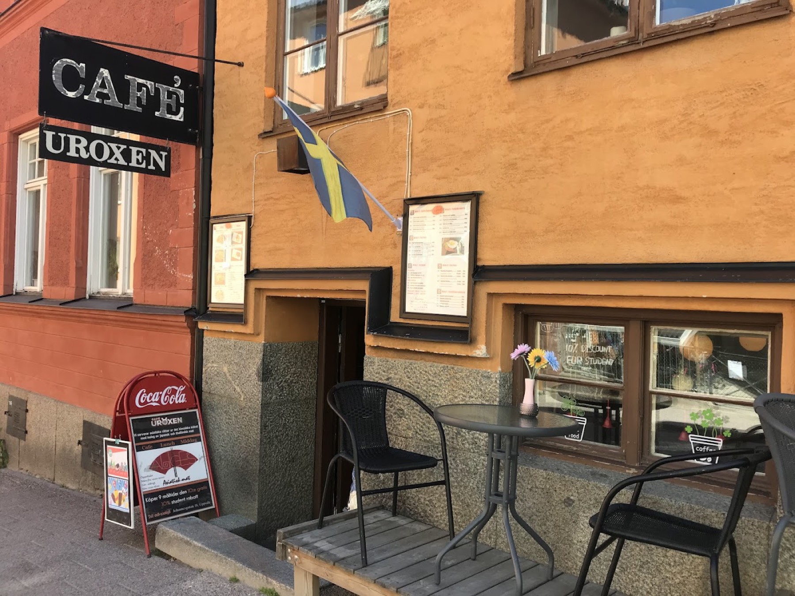
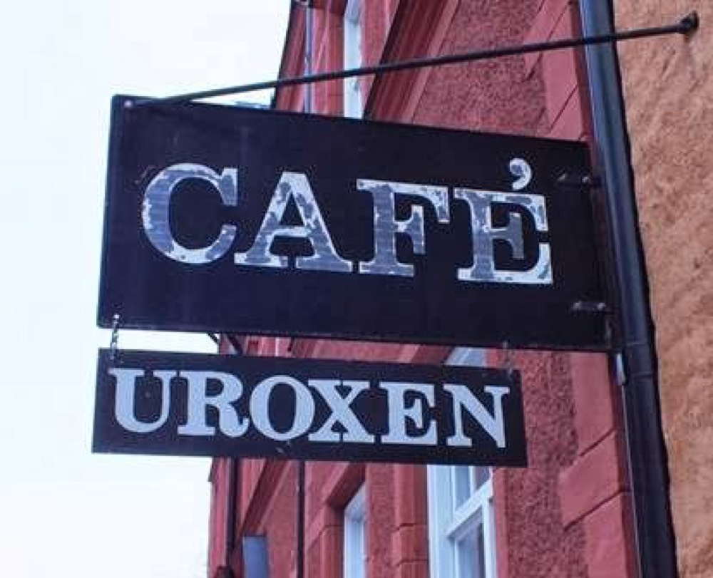
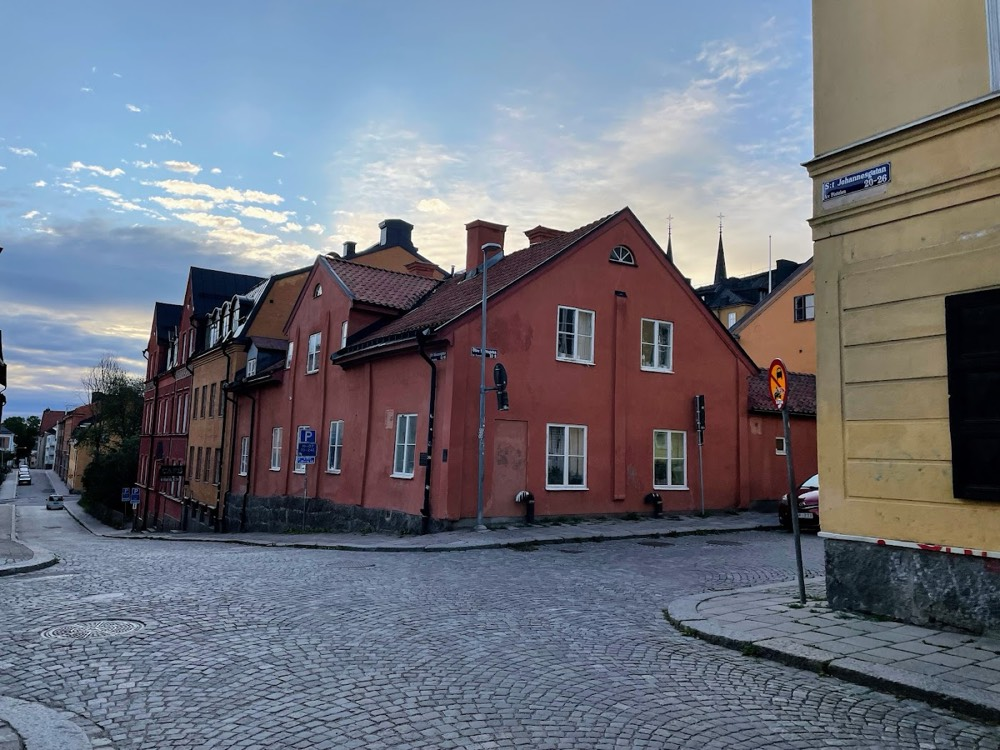
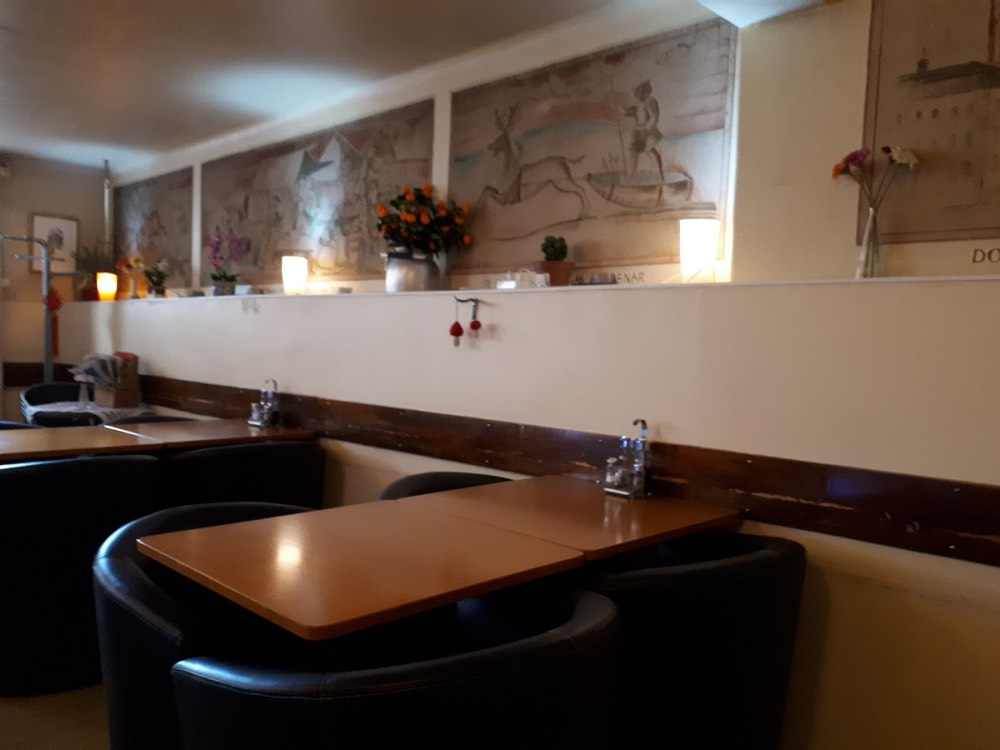
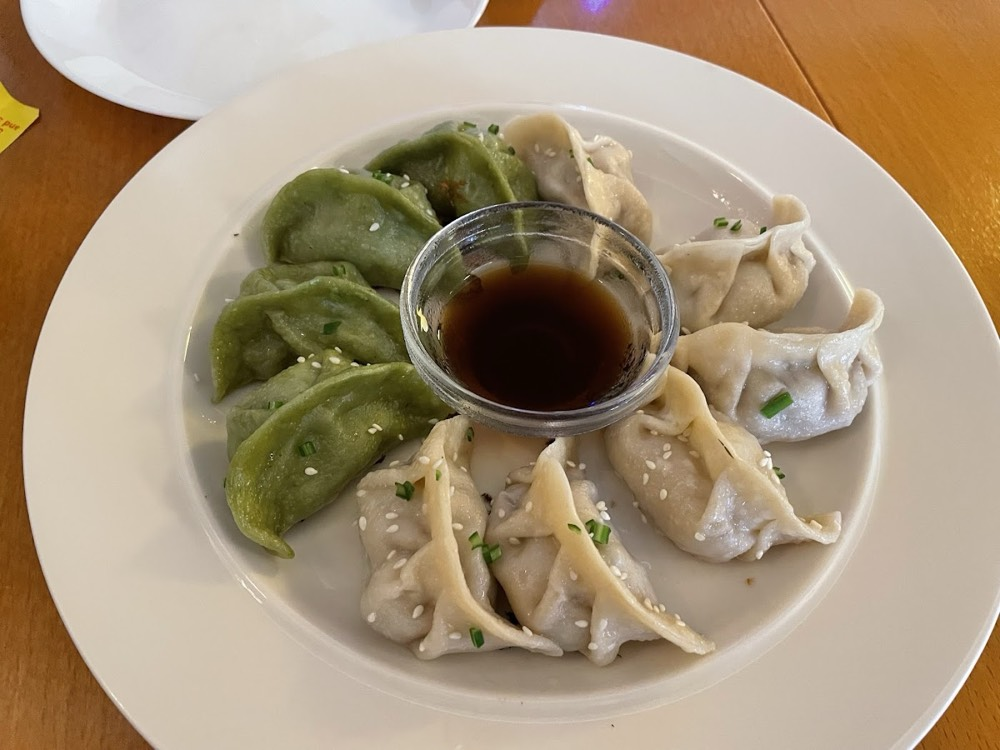
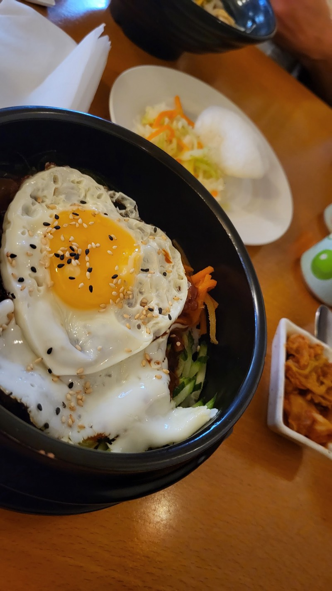
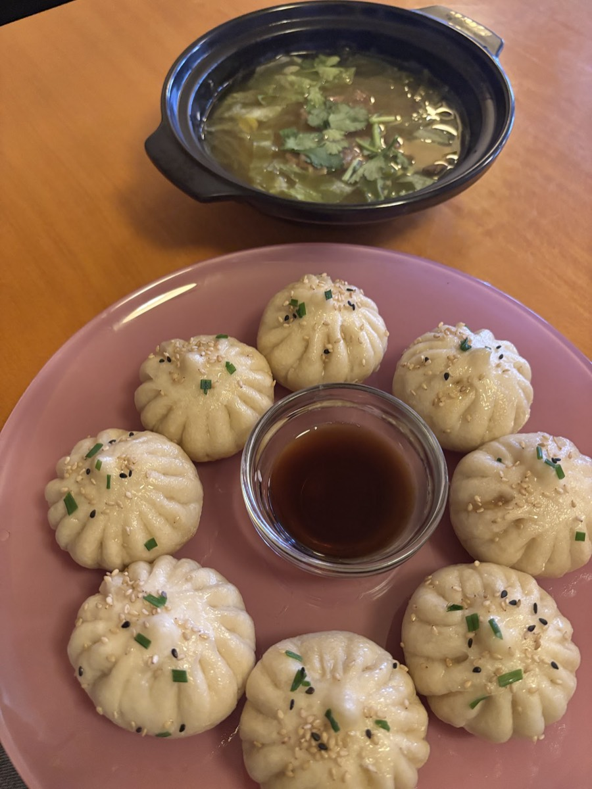
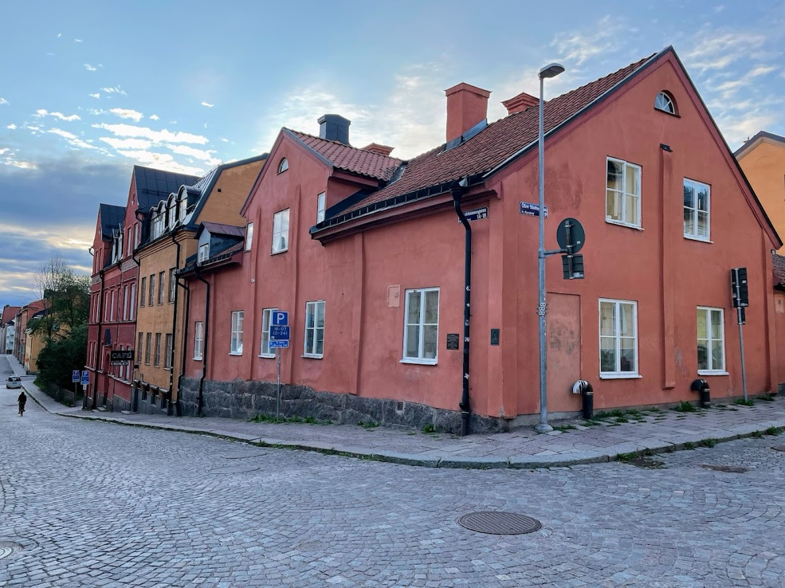
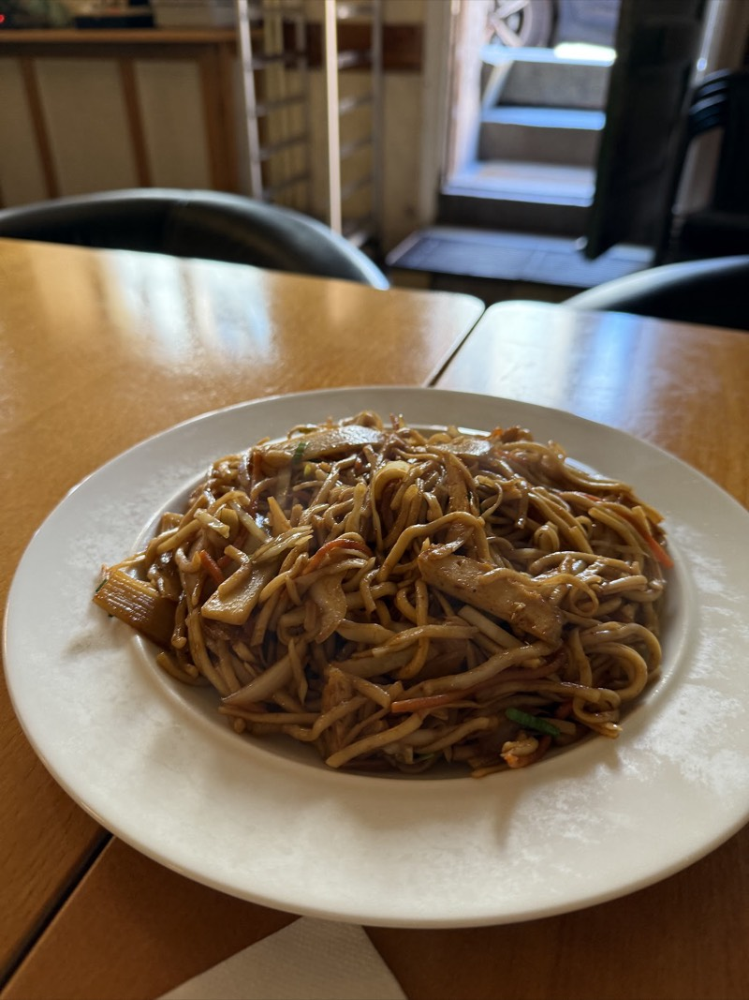

Asiatisk lunch från 93 kr i en mysig källare med gamla väggmålningar – ett stenkast från Domkyrkan. Misosoppa, sallad och kaffe ingår alltid.
Café Uroxen har funnits på S:t Johannesgatan sedan 1928. Idag lagar vi kinesisk och asiatisk husmanskost: handgjorda dumplings, wontonsoppa, bibimbap och nudlar – snabbt, varmt och till ett schysst pris.
Studenter får 10 % rabatt. Flera rätter finns även vegetariska med tofu.



Stekta, saftiga bullar med krispig botten, fyllda med kött och toppade med sesam och salladslök. Gjorda för hand – som i Shanghai.
”Shanghai sheng jian bao helt fantastiska! Vi kommer gärna flera gånger.”— Mar, Google
Misosoppa, sallad, te, kaffe och Loka eller lätt öl ingår i alla rätter.
🎓 Student? Visa ditt kort – 10 % rabatt på hela notan.





”Så gott, rekommenderas verkligen! Vi åt en fantastisk wontonsoppa och Shanghai Sheng Jian Bao. Trevligt och fint bemötande.”
— Carina, Google”Liten, väldigt vacker och ren lokal i ett hus från 1928. Vår sursöta kyckling var perfekt på alla sätt och vis.”
— Linnea, Google”Det bästa jag ätit på länge. Biffen i bibimbapen var otroligt bra – och maten kom så snabbt. 10/10.”
— Molly, GoogleLeta efter den svarta skylten på det röda hörnhuset, fem minuter från Domkyrkan.
S:t Johannesgatan 18
753 12 Uppsala
| Måndag | 10–19 |
| Tisdag | 10–19 |
| Onsdag | 10–19 |
| Torsdag | 10–19 |
| Fredag | 10–19 |
| Lördag | 11–16 |
| Söndag | Stängt |
Kom förbi – eller ring och beställ, så är maten klar när du kommer.
Ring 018-10 06 58 Vägbeskrivning